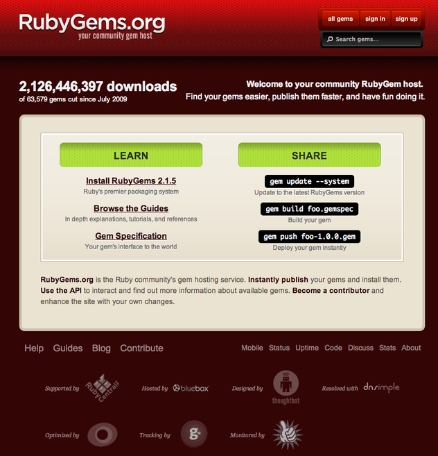
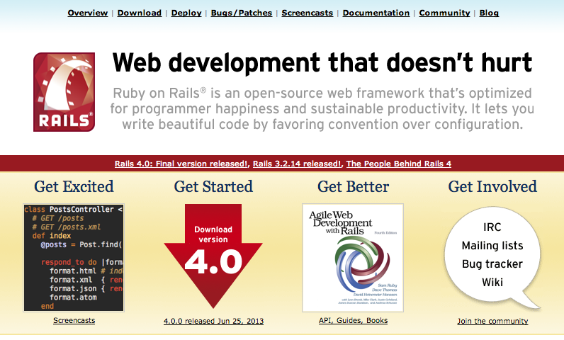

E' stato rilasciato ufficialmente nel 1995 e solo nel 2006 la base di utenza ha raggiunto una diffusione tale da considerarlo non piu un linguaggio di nicchia.
Il suo creatore è
Trying to make Ruby natural, not simple.
Ruby is simple in appearance, but is very complex inside, just like our human body
MRI Matz's Ruby Interpreter. L'implementazione in C aggiornta con le ultimissime novità discusse nelle mailing list
JRuby E' l'implementazione in Java, non è aggiornata alle ultime specifiche ufficiali del linguaggio. Generalmente è in ritardo di una release. Con il tempo risulta essere stabile e sfrutta in modo eccellente le migliorie delle nuove JVM. Sta acquisendo sempre più seguito e credito perchè permette l'integrazione di codice Java preesistente con nuove estensioni in Ruby.
Ruboto è un framework per lo sviluppo di applicazioni native Android, utilizzando JRuby.
Rubinius Implementazione in C++ ma lo sviluppo non è allineato con le specifiche del linguaggio.
Ree E' una versione orientata al mondo server che include significative migliorie in termini di prestazioni e gestione della memoria. Assolutamente da usare quano le risorse hardware risultano limitate oppure costano molto.
Una metodologia agile che privilegia la velocità di sviluppo per ottenere risultati nel più breve tempo possibile.
Una metodologia agile che privilegia la velocità di sviluppo per ottenere risultati nel più breve tempo possibile.
Esistono degli svantaggi in questo approccio:
Una metodologia agile che privilegia la velocità di sviluppo per ottenere risultati nel più breve tempo possibile.
Esistono degli svantaggi in questo approccio:
Una metodologia agile che privilegia la velocità di sviluppo per ottenere risultati nel più breve tempo possibile.
Esistono degli svantaggi in questo approccio:
GNU/Linux - OSX
Windows
\curl -L https://get.rvm.io | bash -s stable
rvm install 2.0.0
# some very simple configuration for your .bash_profile .profile .bashrc
rvm use 2.0.0
rvm list
# jruby-1.7.4 [ x86_64 ]
# ruby-1.9.3-p448 [ x86_64 ]
# =* ruby-2.0.0-p247 [ x86_64 ]pry(main)> cd FileUtils
pry(FileUtils):1> show-method rm
From: /opt/ruby/lib/ruby/1.9.1/fileutils.rb @ line 556:
Number of lines: 10
Owner: FileUtils
def rm(list, options = {})
fu_check_options options, OPT_TABLE['rm']
list = fu_list(list)
fu_output_message "rm#{options[:force] ? ' -f' : ''} #{list.join ' '}" if options[:verbose]
return if options[:noop]
list.each do |path|
remove_file path, options[:force]
end
end
pry(FileUtils):2>bio_text_format = "In bioinformatica\nle informazioni vengono il più delle volte salvate e scambiate in file di testo."
puts bio_text_format
# => In bioinformatica
# => le informazioni vengono il più delle volte salvate e scambiate in file di testo.
bio_text_unformat = 'In bioinformatica\nle informazioni vengono il più delle volte salvate e scambiate in file di testo.'
puts bio_text_unformat
# => In bioinformatica\nle informazioni vengono il più delle volte salvate e scambiate in file di testo.bio_text_format = <<-STR
La bioinformatica è una disciplina scientifica dedicata alla risoluzione di problemi biologici a livello molecolare con metodi informatici.
Essa costituisce un tentativo di descrivere dal punto di vista numerico e statistico i fenomeni biologici: storicamente ed epistemologicamente la biologia ha fatto minor ricorso ad un approccio matematico rispetto ad altre discipline scientifiche (quali fisica e chimica). La bioinformatica quindi tenta di supplire a questa lacuna fornendo ai risultati tipici della biochimica e della biologia molecolare un corredo di strumenti analitici e numerici. Vengono coinvolte, oltre all'informatica, matematica applicata, statistica, chimica, biochimica e nozioni di intelligenza artificiale.
STRbio_text_format = "In bioinformatica\nle informazioni vengono il più delle volte salvate e scambiate in file di testo."
bio_text_format.size #length
# => 98
bio_text_format.count 'a'
# => 7"In bioinformatica\nle informazioni vengono il più delle volte salvate e scambiate in file di testo." == 'In bioinformatica\nle informazioni vengono il più delle volte salvate e scambiate in file di testo.'
# => false
"In bioinformatica\\nle informazioni vengono il più delle volte salvate e scambiate in file di testo." == 'In bioinformatica\nle informazioni vengono il più delle volte salvate e scambiate in file di testo.'
# => trueDa minuscolo a maiuscolo e ancora minuscolo
bio_text_format = "In bioinformatica\nle informazioni vengono il più delle volte salvate e scambiate in file di testo."
bio_text_format.upcase
# => "IN BIOINFORMATICA\nLE INFORMAZIONI VENGONO IL PIù DELLE VOLTE SALVATE E SCAMBIATE IN FILE DI TESTO."
bio_text_format.upcase.downcase
# => "In bioinformatica\nle informazioni vengono il più delle volte salvate e scambiate in file di testo."Puliamo la stringa da spazi e a capo in testa e in coda
bio_text_format = "\t\t\nIn bioinformatica\nle informazioni vengono il più delle volte salvate e scambiate in file di testo.\n\n\n\n\t\t \n"
bio_text_format.strip
# => "In bioinformatica\nle informazioni vengono il più delle volte salvate e scambiate in file di testo."Rimuoviamo dal testo il carattere a
bio_text_format = "\t\t\nIn bioinformatica\nle informazioni vengono il più delle volte salvate e scambiate in file di testo.\n\n\n\n\t\t \n"
bio_text_format.delete 'a'
# => "In bioinformtic\nle informzioni vengono il più delle volte slvte e scmbite in file di testo."Cambiamo a mano il newline
bio_text_format = "In bioinformatica\nle informazioni vengono il più delle volte salvate e scambiate in file di testo."
bio_text_format[17] = ' '
# => " "
bio_text_format
# => "In bioinformatica le informazioni vengono il più delle volte salvate e scambiate in file di testo."Estrazione di una sotto stringa
bio_text_format = "In bioinformatica\nle informazioni vengono il più delle volte salvate e scambiate in file di testo."
bio_text_format[18..33]
# => "le informazioni "Cambiamo a mano il newline
bio_text_format = "In bioinformatica\nle informazioni vengono il più delle volte salvate e scambiate in file di testo."
bio_text_format.freeze
bio_text_format[17] = ' '
# RuntimeError: can't modify frozen StringPer poter sostituire parti di una stringa
bio_text_format = "In bioinformatica\nle informazioni vengono il più delle volte salvate e scambiate in file di testo."
bio_text_format.gsub(/le informazioni/,'i dati').gsub(/ate/,'ati')
# => "In bioinformatica\ni dati vengono il più delle volte salvati e scambiati in file di testo."bio_text_format = "In bioinformatica\nle informazioni vengono il più delle volte salvate e scambiate in file di testo."
bio_text_format =~ /informazioni/
# => 21
$` # la parte di stringa prima del match
# => "In bioinformatica\nle "
$& # ciò che l'espressione regolare ha verificato
# => "informazioni"
$' # la parte di stringa dopo il match
# => " vengono il più delle volte salvate e scambiate in file di testo."bio_text_format = "In bioinformatica\nle informazioni vengono il più delle volte salvate e scambiate in file di testo."
bio_text_format =~ /informazioni/
# => 21
$` # la parte di stringa prima del match
# => "In bioinformatica\nle "
$& # ciò che l'espressione regolare ha verificato
# => "informazioni"
$' # la parte di stringa dopo il match
# => " vengono il più delle volte salvate e scambiate in file di testo."Spesso questo tipo di pattern matching viene utilizzato per verificare delle condizioni e operare delle scelte in funzione dell' input.
Vogliamo sapere il # di GC nella sequenza ma solo se la stringa ha DNA come prefisso
sequence = 'DNA:acgtaggaccgacagcagatgcccgagatggacg'
if sequence =~ /DNA/
puts sequence.count 'gc' #conta i singoli caratteri non la coppia
else
puts 'Non è DNA, non ha senso contato il conenuto di GC'
end
# => 21Vogliamo sapere il # di GC nella sequenza ma solo se la stringa ha DNA come prefisso ma in questo caso non ci serve una stringa di ritorno ma bensi il numero che andremo a salvare in una variabile
sequence = 'DNA:acgtaggaccgacagcagatgcccgagatggacg'
if sequence =~ /DNA/
gc = sequence.count 'gc' #conta i singoli caratteri non la coppia
else
gc = 0
end
puts gc
# => 21Vogliamo sapere il # di GC nella sequenza ma solo se la stringa ha DNA come prefisso ma in questo caso non ci serve una stringa di ritorno ma bensi il numero che andremo a salvare in una variabile
sequence = 'DNA:acgtaggaccgacagcagatgcccgagatggacg'
gc = if sequence =~ /DNA/
sequence.count 'gc' #conta i singoli caratteri non la coppia
else
0
end
puts gc
# => 21Vogliamo sapere il # di GC nella sequenza ma solo se la stringa ha DNA come prefisso ma in questo caso non ci serve una stringa di ritorno ma bensi il numero che andremo a salvare in una variabile
sequence = 'DNA:acgtaggaccgacagcagatgcccgagatggacg'
gc = sequence =~ /DNA/ ? sequence.count('gc') : 0
puts gc
# => 21Vogliamo sapere il # di GC nella sequenza ma solo se la stringa ha DNA come prefisso ma in questo caso non ci serve una stringa di ritorno ma bensi il numero che andremo a salvare in una variabile
sequence = 'DNA:acgtaggaccgacagcagatgcccgagatggacg'
gc = sequence.count('gc') if sequence =~ /DNA/
puts gc
# => 21In questo ultimo caso non ci interessa assegnare un valore a gc nel caso non sia DNA perchè probabilmente non ce ne faremmo nulla o comunque controlleremmo prima di usarlo.
Vogliamo sapere il # di GC nella sequenza ma solo se la stringa ha DNA come prefisso ma in questo caso non ci serve una stringa di ritorno ma bensi il numero che andremo a salvare in una variabile
sequence = 'RNA:acgtaggaccgacagcagatgcccgagatggacg'
gc = sequence.count('gc') if sequence =~ /DNA/
if gc
puts "Il contenuto di GC nella sequenza di DNA è #{gc}"
endnon otterremo nulla perchè a gc viene attribuito il valore nil in automatico
Ogni oggetto in Ruby è identificato da una chiave univoca che corrisponde all'ID dell'oggetto
bio_text_format = "In bioinformatica\nle informazioni vengono il più delle volte salvate e scambiate in file di testo."
# => 70347711225800
object = ObjectSpace._id2ref(70347711225800) # questo è come e fosse un puntatore all'oggetto bio_text_format
object == bio_text_format
# => true
alt_string = "In bioinformatica\nle informazioni vengono il più delle volte salvate e scambiate in file di testo."
bio_text_format == alt_string
# => true
bio_text_format.equal? alt_string
# => false
alt_string.object_id
# => 70347702565640Ecco come Ruby valuta/considera cosa noi gli diamo in input
[65] pry(main)> [nil, "1", :uno, 1, 3.5, YAML, Class, Module ].each{|x| puts "#{x.is_a? Object} #{x.is_a? Module} #{x.class} #{x.class.superclass}"}
--------------------------------------------------
| Object | Module | Class Type | Main Class Type |
--------------------------------------------------
| true | false | NilClass | Object |
| true | false | String | Object |
| true | false | Symbol | Object |
| true | false | Fixnum | Integer |
| true | false | Float | Numeric |
| true | true | Module | Object |
| true | true | Class | Module |
| true | true | Class | Module |
--------------------------------------------------Perchè prima non ho ritornato il valore ZERO ?
sequence = 'RNA:acgtaggaccgacagcagatgcccgagatggacg'
gc = sequence.count('gc') if sequence =~ /DNA/
if gc
puts "Il contenuto di GC nella sequenza di DNA è #{gc}"
endPerchè prima non ho ritornato il valore ZERO ?
sequence = 'RNA:acgtaggaccgacagcagatgcccgagatggacg'
gc = sequence.count('gc') if sequence =~ /DNA/
unless gc.nil? # if !gc.nil?
puts "Il contenuto di GC nella sequenza di DNA è #{gc}"
endPerchè in Ruby è sufficiente che un oggetto sia diverso da nil o da false perchè l'espressione in cui viene valutato risulti vera.
Perchè prima non ho ritornato il valore ZERO ?
sequence = 'RNA:acgtaggaccgacagcagatgcccgagatggacg'
gc = sequence.count('gc') if sequence =~ /DNA/
puts "Il contenuto di GC nella sequenza di DNA è #{gc}" unless gc.nil? # if !gc.nil?Perchè in Ruby è sufficiente che un oggetto sia diverso da nil o da false perchè l'espressione in cui viene valutato risulti vera.
Perchè prima non ho ritornato il valore ZERO ?
sequence = 'RNA:acgtaggaccgacagcagatgcccgagatggacg'
gc = sequence.count('gc') if sequence =~ /DNA/
gc && puts("Il contenuto di GC nella sequenza di DNA è #{gc}")Perchè in Ruby è sufficiente che un oggetto sia diverso da nil o da false perchè l'espressione in cui viene valutato risulti vera.
Vogliamo scrivere uno script che ci permetta di avere una parametro di default nel caso l'utente non ci passi il nome del file in cui andremo a scrivere il nostro output.
Perchè non usare le espressioni booleane a nostro vantaggio ?
Vogliamo scrivere uno script che ci permetta di avere una parametro di default nel caso l'utente non ci passi il nome del file in cui andremo a scrivere il nostro output
file_name = ARGV[0] || "data-output.txt" #Short-Circuit Evaluation
# mi serve assolutamente un nome di file
file_name ||= ARGV[0]
# il nome è opzionale e viene assegnato solo se l'utente lo passa. Risulta ovvio che prima di utilizzare file_name per scrivere sul file devo verificare che il valore sia presente.Sono anche possibili assegnamenti multipli
nome, cognome, eta, sesso = 'John', 'Doe', 35, 'Male'
# => ["John", "Doe", 35, "Male"]swap in un'unica istruzione
min = 100
max = 35
min, max = max, min if max < min
# => [35, 100]f = 123
f.class
# => Fixnum
b = 1234567890
b.class
# => Bignum10 # i numeri decimali sono preceduti da 0d che però può essere omesso
# => 10
010 # i numeri ottali sono preceduti da uno 0
# => 8
0x10 # i numeri esadecimali sono preceduti da 0x
# => 16
0b10 # i numeri binari sono preceduti da 0b
# => 2E' possibile convertire numeri in stringhe e stringhe in numeri
10.to_s
# => "10"
"23".to_i
23- binario ( x - y )- cambio di segno (-x)Gli array possono contentere tipi di dati eterogenei
ary = [ 10, 'Dieci', :dieci, 55.33]
puts ary[0]
# => 10
puts ary[-1]
# => 55.33nel caso di array di stringhe questi possono essere creati usando una sintassi particolare
ary = %w( uomo cane gatto pesce oca)
puts ary[0]
# => uomo
puts ary[-1]
# => ocaary_one = %w( uomo cane gatto pesce oca)
ary_two = [ 10, 'Dieci', :dieci, 55.33, 'pesce']
ary_union = (ary_one + ary_two)
# => ["uomo", "cane", "gatto", "pesce", "oca", 10, "Dieci", :dieci, 55.33, "pesce"]
ary_union = (ary_one + ary_two).uniq
# => ["uomo", "cane", "gatto", "pesce", "oca", 10, "Dieci", :dieci, 55.33]
ary_union.sort
# => ArgumentError: comparison of String with 10 failedPer alcune operazioni non è possibile operare su tipi di dato che non siano compabili.
Ruby li utilizza largamente:
hash = { 'dna' =>'acido desossiribonucleico',
'rna' => 'acido ribonucleico'
}le chiavi di un hash possono essere di diversi tipi. Generalmente quando si vogliono utilizzare delle stringhe come chiavi è meglio utilizzare i simboli
hash = { :dna =>'acido desossiribonucleico',
:rna => 'acido ribonucleico'
}Nel caso degli Hash i simboli sono usati moltissimo. I simboli sono da considerarsi come delle etichette il cui nome ha un significato, di per se non contengono nessun valore. Non sono da confondere con le stringhe, infatti sono un tipo a parte.
dna = :dna
rna = :rna
dna.class
# => Symbol
dna_x = :dna
dna.object_id
# => 1387528
dna_x.object_id
# => 1387528Ruby ci permette di iterare su molti tipi di dati: Stringhe, Array, Hash e il più delle volte non dobbiamo nemmeno più utilizzare quei brutti costrutti quali while, for, loop, ... Invece possiamo in modo elegante utilizzare la parola magica each
Scorrere il contenuto di un array e recuperare il tipo di dato
ary = [ 10, 'Dieci', :dieci, 55.33, 'pesce']
ary.each do |item|
puts item.class
end
# Fixnum
# String
# Symbol
# Float
# Stringdict = Hash.new(0)
sequence = 'acgtaggaccgacagcagatgcccgagatggacg'
sequence.each_char do |car|
dict[car]+=1
end
# => {"a"=>10, "c"=>9, "g"=>12, "t"=>3}dict = Hash.new(0)
sequence = 'acgtaggaccgacagcagatgcccgagatggacg'
sequence.each_char do |car|
dict[car]+=1
end
# => {"a"=>10, "c"=>9, "g"=>12, "t"=>3}
puts dict.keys
# a
# c
# g
# tdict = Hash.new(0)
sequence = 'acgtaggaccgacagcagatgcccgagatggacg'
sequence.each_char do |car|
dict[car]+=1
end
# => {"a"=>10, "c"=>9, "g"=>12, "t"=>3}
dict.each_pair do |car, n|
#allineiamo i numeri a destra
printf "%s -> %2d\n", car, n
end
# a -> 10
# c -> 9
# g -> 12
# t -> 3Creiamo una sequenza tandem
seq = 'acgtag'
n = 5
tandem = ''
n.times { tandem+= seq}Creiamo una sequenza tandem
seq = 'acgtag'
n = 5
tandem = ''
n.times { |i| tandem+= seq; puts "#{i}: #{tandem}"}
# 0: acgtag
# 1: acgtagacgtag
# 2: acgtagacgtagacgtag
# 3: acgtagacgtagacgtagacgtag
# 4: acgtagacgtagacgtagacgtagacgtagGli iteratori sono cool ma da soli non bastano!
Gli iteratori sono cool ma da soli non bastano!
Abbiamo bisogno dei BLOCCHI
Gli iteratori sono cool ma da soli non bastano!
Abbiamo bisogno dei BLOCCHI
3.times{ puts "BLOCK ROCKS!" }Gli iteratori sono cool ma da soli non bastano!
Abbiamo bisogno dei BLOCCHI
3.times{ puts "BLOCK ROCKS!" }Intuitivamente il blocco è una porzione di codice che può essere passata a un metodo che successivamente lo esegue.
Iteratore
3.times Bloccco
{ puts "BLOCK ROCKS!" }3.times { puts "BLOCK ROCKS!" }=
3.times do
#just add a line to use a multi line block
puts "BLOCK ROCKS!"
endPossiamo anche stampare il numero di iterazione
Possiamo anche stampare il numero di iterazione
3.times do |index|
puts "#{index} BLOCK ROCKS!"
end
# 0 BLOCK ROCKS!
# 1 BLOCK ROCKS!
# 2 BLOCK ROCKS!Possiamo costruire un metodo che accetta un blocco di codice e lo esegue
def crunch
puts "All' interno di crunch"
yield
end
crunch { puts 'esegue il mio blocco'}
# All' interno di crunch
# esegue il mio bloccoPossiamo costruire un metodo che accetta un blocco di codice e lo esegue
def crunch(name)
puts "All' interno di crunch"
puts name
yield
end
crunch('Ruby') { puts 'esegue il mio blocco'}
# All' interno di crunch
# Ruby
# esegue il mio bloccoPossiamo anche passare un parametro direttamente al blocco
def crunch(name)
puts "All' interno di crunch"
yield name
end
crunch('Ruby') do |name|
puts "#{name.upcase} esegue il mio blocco"
end
# All' interno di crunch
# RUBY esegue il mio bloccoPossiamo anche passare più di un parametro direttamente al blocco
def crunch(name)
std_message = "All' interno di crunch"
yield std_message, name
end
crunch('Ruby') do |message, name|
puts "#{message} #{name.upcase} esegue il mio blocco"
end
# All' interno di crunch RUBY esegue il mio bloccoI blocchi possono essere anche opzionali all'interno di un metodo. Abbiamo quindi un comportamento di default e uno particolare nel caso di un blocco
def crunch(name)
std_message = "All' interno di crunch"
if block_given?
yield std_message, name
else
puts "#{std_message} non ho nulla da fare -_-'"
end
end
crunch('Ruby')
# All' interno di crunch non ho nulla da fare -_-'
crunch('Ruby'){|message, name| puts "#{message} #{name} deve ancora fare molto lavoro." }
# All' interno di crunch Ruby deve ancora fare molto lavoro.block = Proc.new {|first, second| puts "My firsy name is #{first} and the last name is #{second}"}
# => #<Proc:0x007fee1328cec8@(pry):61>
block.call('John', 'Doe', 'Unkown')
# My firsy name is John and the last name is Doe
lambda_block = lambda {|first, second| puts "My firsy name is #{first} and the last name is #{second}"}
# => #<Proc:0x007fee133952c0@(pry):63 (lambda)>
lambda_block.call('John', 'Doe', 'Unkown')
# ArgumentError: wrong number of arguments (3 for 2)Esistono due differenze sostanziali tra Proc e funzioni Lambda:
Un esempio di utilizzo dei blocci è tramite l'accesso ai file. Supponiamo che vogliamo fare una copia di un file.
File.open("dna_sequence.fasta",'r') do |rfile|
File.open("dna_sequence.fasta.backup",'w') do |wfile|
rfile.each_line do |rline|
wfile.write(rline)
end
end
end #si preoccupa di chiudere l'handler in lettureCi sono diversi iteratori per la lettura di un file
file.each_byte
file.each_char
file.each_line
file.readline
file.readlines #carica tutto il file in memoria creando un array di arrayCreiamo una sequenza tandem ma cerchiamo di farlo in modo semplice
seq = 'acgtag'
n = 5
tandem = seq * n
# 0: acgtag
# 1: acgtagacgtag
# 2: acgtagacgtagacgtag
# 3: acgtagacgtagacgtagacgtag
# 4: acgtagacgtagacgtagacgtagacgtagAlcune operazioni aritmentiche possono quindi essere applicate a differenti tipi di dati e il comportamento è specifico di quel tipo.
Potremmo anche creare un metodo che genera un tandem a partire da una stringa
# La sequenza tandem di una stringa è la stringa ripetuta
# n volte
def tandem(seq, n=1)
seq * n
endma dato che non c'è controllo sui tipi dei parametri nel caso
seq = nilotterremo un
NoMethodError: undefined method `*' for nil:NilClassPotremmo quindi modificare il metodo
def tandem(seq, n)
seq * n unless seq.nil?
endNon vi pare un pò sporca come cosa, molto procedurale?
Una soluzione potrebbe essere quella di estendere la classe String* e aggiungere il metodo tandem
class String
def tandem(n=1)
self * n
end
endclass String
def tandem(n=1)
self * n
end
endclass String
def tandem(n=1)
self * n
end
endTuttavia non ha molto senso che tutte le stringe possano generare dei tandem dato che per noi riveste un significato solo nel contesto biologico.
estendendola con il nostro metodo tandem
class BioString < String
def tandem(n=1)
self * n
end
end
string = "agcgatgca"
string.tandem 10
# => NoMethodError: undefined method `tandem' for "agcgatgca":String
sequence = BioString.new "agcgatgca"
tandem = sequence.tandem 2
sequence.object_id
# => 70341335399180
tandem.object_id
# => 70341347607400ma vorremmo anche avere un metodo che mi permetta di modificare in modo permanente la mia stringa
class BioString < String
def tandem!(n=1)
self << self * (n-1)
end
end
sequence = BioString.new "agcgatgca"
tandem = sequence.tandem! 2
sequence.object_id
# => 70341335399180
tandem.object_id
# => 70341335399180sequence e tandem puntano allo stesso oggetto perchè bisgna sapere che in Ruby il valore ritornato da un metodo è sempre l'ultima espressione valutata dal metodo che è stato chiamato.
Aggiungiamo degli attributi
class BioString < String
attr_accessor :name
end
bs = BioString.new "acgtaggacgcagt"
bs.name
# => nil
bs.name = "DNA:unkown"
bs.name
# => DNA:unkownAggiungiamo degli attributi e variabili di istanza
class BioString < String
attr_accessor :name
def initialize(str=nil)
super(str)
@quality = :unkown
end
end
bs = BioString.new "acgtaggacgcagt"
bs.quality
# => NoMethodError: undefined method `quality' for "acgtaggacgcagt":BioStringse vogliamo che le variabili siano inizializzare durante la creazione dell'oggetto dobbiamo dichiararle esplicitamente in initialize
Aggiungiamo degli attributi
class BioString < String
attr_accessor :name
attr_reader :quality
def initialize(str=nil)
super(str)
@quality = :unkown
end
end
bs = BioString.new "acgtaggacgcagt"
bs.name = "DNA:Unknonw"
# => DNA:Unknonw
bs.quality
# => :unkownLe variabili di istanza si possono chiamare solo tramite metodi dell'oggetto.
Variabili di classe
E' possibile creare delle variabili che siano condivise da tutti gli oggetti appartenenti alla medesima classe.
class BioString < String
@@counter = 0
def counter
@@counter
end
def initialize(str=nil)
super(str)
@@counter +=1
end
end
bs = BioString.new "acgtaggacgcagt"
bs.counter
# => 1
bs_short = BioString.new "acg"
bs_short.counter
# => 2Esistono anche le variabili globali definite con $ ma non sono usate frequentemente. Si usano per condividere parametri di configurazione o di ambiente.
$ # globale
@@ # classe
@ # istanzasolo tramite medoti è possibile accedere alle variabili
public # tutti li possono chiamare
protected # solo oggetti della stessa classe possono chiamarli
private # solo l'oggetto può chiamare i metodi definiti nella classedef converti(str, scala=:upcase)
if scala == :upcase
str.upcase
elsif scala == :downcase
str.downcase
else
str
end
end
converti("agtagacccccccggt")
# => agtagacccccccggt
converti("agtagacccccccggt", :upcase)
# => AGTAGACCCCCCCGGT
converti("AGTAGACCCCCCCGGT", :downcase)def converti(str, opt={})
if opt[:upcase]
str.upcase
elsif opt[:downcase]
str.downcase
else
str
end
end
converti("agtagacccccccggt")
# => agtagacccccccggt
converti("agtagacccccccggt", :upcase => true)
# => AGTAGACCCCCCCGGT
converti("AGTAGACCCCCCCGGT", :downcase => true)
# => agtagacccccccggtQuesto è la metodologia più comune per il passaggio di parametri in Ruby.
Sono metodi che appartengono solo a una specifica istanza di un oggetto
bs = BioString.new "acgtaggacgcagt"
def bs.converti(opt={})
if opt[:upcase]
upcase
elsif opt[:downcase]
downcase
else
self
end
end
bs.converti :upcase=> true
# => "ACGTAGGACGCAGT"
ss = BioString.new "acgtaggacgcagt"
ss.converti :upcase=> true
# => NoMethodError: undefined method `converti' for "acgtaggacgcagt":BioStringQuesto perchè il metodo converti esiste solo per l'oggetto bs
Dato che in Ruby tutto è un oggetto il metodo con cui vengono effettuare le chiamate agli oggetti è quello dei messaggi. E' quindi possibile spedire una richiesta di un metodo a un preciso oggetto (ID):
"acgacgacagt".send :upcase
# => "ACGACGACAGT"cosa accade però se l'oggetto non è in grado di rispondere ?
Come puo essere usato method_missing ? Di solito viene intercettato e si predispone una azione
class String def method_missing(m, *args, &block)
puts "There's no method called #{m} here -- please try again." end
end
module Bio
class Sequence < String
end
end
s=Bio::Sequence.new
#=> ""
#[3] pry(main)> s.class.ancestors
#=> [Bio::Sequence,
# String,
# Comparable,
# Object,
# PP::ObjectMixin,
# Kernel,
# BasicObject]non possiamo calcolare la media perchè la funzione non è implementata per gli array possiamo però creare un Modulo cosi da estendere la classe Array
module Statistica
def media
if map{|item| item.is_a?(Numeric)}.uniq.size == 1
inject(0){|sum, item| sum+item}/size.to_f
end
end
end
class Array
include Statistica
end
ary = [1, 2]
ary.mediaIl messaging, i metodi singleton, il mixing se utilizzati a runtime sono tutte tecniche di metaprogrammazione. La Metaprogrammazione è sostanzialmente una tecnica di programmazione tramite la quale il codice genera nuovo codice che estende le funzionalità del programma istantaneamente.
Roby On Rails come tutti i Domain Specific Language (DSL) sviluppati con Ruby sono esempi di metaprogrammazione, più o meno complicata che siano.
Feature: Division
In order to avoid silly mistakes
Cashiers must be able to calculate a fraction
Scenario: Regular numbers
* I have entered 3 into the calculator
* I have entered 2 into the calculator
* I press divide
* the result should be 1.5 on the screene il codice per la verifica
Given /I have entered (\d+) into the calculator/ do |n|
@calc.push n.to_i
end
When /I press (\w+)/ do |op|
@result = @calc.send op
end
Then /the result should be (.*) on the screen/ do |result|
@result.should == result.to_f
endRSpec is testing tool for the Ruby programming language. Born under the banner of Behaviour-Driven Development, it is designed to make Test-Driven Development a productive and enjoyable experience.
describe Stack do
context "when new" do
it { should be_empty }
it { should have(0).items }
end
endproducendo un output semplice e chiaro
Stack
when new
should be empty
should have 0 items
Finished in 0.00089 seconds
2 examples, 0 failuresE' il livello più basso come esperienza di testing perchè si preoccupa di verificare le singole funzioni degli oggetti e risulta anche molto meno espressivo
# File: tc_bio_sequence.rb
require "./bio_sequence"
require "test/unit"
class TestBioSequence < Test::Unit::TestCase
def test_sequence
assert_equal('acgtacgt', Bio::Sequence.new('acgtacgt') )
assert_equal('ACGTACGT', Bio::Sequence.new('acgtacgt').upcase )
end
endRubyGems è un gestore di pacchetti per Ruby e anche il sito web di riferimento per i pacchetti stessi. 
Il più famoso framework di sviluppo web del mondo Ruby, è in pratica la gemma che ha diffuso in modo virale Ruby. 
Due alternative a Ruby on Rails, basati sulla semplicità di utilizzo e immediatezza. Sono ottimi per disegnare applicazioni web e specialmente API RESTFUL.
Ci permette suddividendo in anticipo i dati iniziali di eseguire in parallelo lo stesso codice.
Una libreria molto comoda per sviluppare velocemente applicazioni a riga di comando, permette una gestione sofisticata mal allo stesso tempo intuitiva dei parametri.
Permette la creazione di gemme e ne gestisce le dipendenze nella fase di sviluppo.
Raoul Bonnal Crea uno scaffold con le dipendenze necessarie per sviluppare altre gemme per la bioinformatica e il sito web raccoglie tutti i pacchetti Bio
E' una libreria specifica per la BioInformatica che permette la manipolazione e gestione di diversi oggetti biologici: sequence analysis, pathway analysis, protein modelling and phylogenetic analysis. Supporta molti formati di dati e permette l'interrogazione/interazione remota dei più noti database pubblici tra cui BAST,KEGG, GenBank, MEDLINE, GO.
Plotrb is an experimental plotting library for the Ruby language. It brings the simplicity of Vega and the power of D3.
Data mining and machine learning algorithms for Ruby
installazione
gem install ruby-bandesempio
require 'ruby-band'
# Evaluator
eval = Weka::Attribute_selection::Evaluator::CfsSubsetEval.new
# Search algorithm
search = Weka::Attribute_selection::Search::GreedyStepwise.new
dataset = Core::Parser::parse_ARFF('weather.numeric.arff')Ruby-FFI is a ruby extension for programmatically loading dynamic libraries, binding functions within them, and calling those functions from Ruby code. Moreover, a Ruby-FFI extension works without changes on Ruby and JRuby.
installazione
gem install ffiesempio
require 'ffi'
module MyLib
extend FFI::Library
ffi_lib 'c'
attach_function :puts, [ :string ], :int
end
MyLib.puts 'Hello, World using libc!'